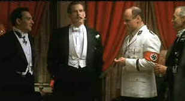

| Mother Night (SE)/A-,A- |
| New Line/1996/113/ANA 1.85 |
Mother Night is a fine film of a Kurt Vonnegut book. Raw Vonnegut novel material is not the easiest to translate to film. The often jarring juxtaposition can put off a film in the short span of less than two hours. Vonnegut takes readers into unexpected places. The wonderful thing about Robert Weide's script is that it respects the
voice of the author, tackles the difficult questions with intelligence, and makes it all cinematically intelligible.
Howard W. Campbell, Jr. is an American brought up in Germany in the years prior to World War II. Campbell becomes a successful playwright, marries a popular stage actress, and when war looms on the horizon, he opts to stay in Germany instead of returning to America. Campbell becomes the American voice of Germany, delivering vitriolic radio bile defaming Jews, Blacks and Franklin Delano "Rosenfeld" is a
smooth insidious voice.
 |
| Campbell consorts with the Nazis. ©New Line |
Why is Campbell in a jail cell in Israel to stand trial for war crimes? How did he get there and what drove the man are questions asked and answered by the screenplay. Campbell, racked with guilt, writes his memoirs as he awaits trial.
Nick Nolte plows the depths of Campbell with a painful performance. When Nolte catches the light of the character, he is one of the best around. You can see Nolte thinking about his situation. The tremors in his hand seem real. The character is equal parts passion and ice. I think Nolte understands Campbell well and the result is one of his best performances. John Goodman plays the "Blue Fairy
Godmother" with typical good nature. An interesting casting choice. Alan Arkin provides solid support as George Kraft, a fellow lost soul living in the same building as Campbell.
Gordon's pacing and movement between segments of the film is crucial to its success, and the director does not miss a beat. This is a small, personal; movie, yet the filmmakers make it seem larger than life. Germany, with a few short strokes comes to life, New York breathes, and even Israel, tough confined to the shadowy images of a prison, has its own reality. The complexity of guilt is explored. I had forgotten some of the machinations of the film from when I saw it four years ago in the movies. It’s a layered film, layered and segmented: the settings are dramatically very different, though it’s shot in the same way in each place. Tight, faces, all faces, surrounded by place and events.
. The DVD is a special edition with a half dozen deleted scenes and two commentaries. One by Nolte is an interview recorded at his home and is not scene specific. Nick talks about acting, the industry, and Mother Night in no particular order. He generous about sharing his process of approaching acting. Nolte is an interesting man and the time listening to him is well spent. Keith Gordon and Robert Weide, director and
writer, provide their scene specific observations about the film on the other track. Both are knowledgeable film people and passionate about the material.
Transfer is bright with strong contrasts. Colors are rich, though reds are slightly more orange than I prefer. Probably the raw material. Some edge enhancement is visible in peak transition scenes, but mostly the visual presentation is penetrating. Resolution is deep enough to look into the soul of Howard W. Campbell, Jr. "the last free American." Crisp and clean audio provides
easy to understand dialogue and a powerful score. Mother Night scores as a powerful special edition presentation.
|
|
 
Irreverent DVD views and links to many sites. The big question is "Who is Uncle Herbie?"

Home to The American Society of Cinematographers. Includes features from American Cinematographer Magazine and more...
 
The Big Combo has style to spare in reviewing films and producing feature articles. Check out their special "Lingo" section.

Now a major independent DVD distributor, Image has parlayed its laser disc business to success. Great DVD release calendar info.

This Canadian online DVD retailer may not offer pepperoni, but does have a selection of 5000 plus DVDs. How about deep-dish discounts guys.

The home of director Kevin Smith, replete with inside info on his films like Clerks, Mall Rats, Chasing Amy and Dogma.

The American Widescreen Museum, is the ultimate resource for widescreen movie information, Martin Hart's reliable site is a great tool for movie buffs.
 A love of movies drives this small DVD production company, Synapse Films. Currently specializing in horror and cult
films. Watch for new DVD releases of film festival independents as Synapse branches out. A love of movies drives this small DVD production company, Synapse Films. Currently specializing in horror and cult
films. Watch for new DVD releases of film festival independents as Synapse branches out.

The Feature Archive has articles ranging from Akira Kurosawa to Blonde Bimbos.
Movie Rage: Death in the Aisles
Everyone knows what it feels like to get angry at the movies these days. Here's a humorous but not so delightful view of big screen misery.
|